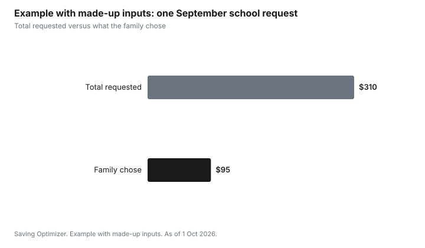

Kids · Canada
School Fees and Fundraising in Canada: What Schools Can Charge and What's Optional
In Canada, publicly funded schools generally cannot charge for the learning every student must do, but they can ask for fees for optional activities and run voluntary fundraising. Ontario puts this in writing: its fees guideline says schools cannot charge for required learning and activities, and its fundraising guideline says money raised must complement, not replace, public funding and cannot pay for textbooks, classroom learning materials or facility repairs funded by grants. Other provinces have their own rules. Ask your board for its itemized fee list and hardship process, and treat anything not required as a choice.
Key takeaways
- Ontario's fees guideline: no fees for required learning and activities that students must do.
- Student activity fees are voluntary in Ontario. Boards must have a hardship process with discreet identification.
- Ontario's fundraising guideline: proceeds complement public funding. They cannot pay for classroom learning materials, textbooks, or facility renewal funded by provincial grants.
- Other provinces: check the provincial education ministry and your board's policy. Do not assume Ontario's rules apply.
- Example with made-up inputs: a $310 September request falls to $95 of required-for-the-activity fees once optional items are separated.
Required, optional, or fundraising
Sort every request from the school into one of three groups. Required learning is what every student must do to meet curriculum expectations; in Ontario it should not carry a fee. Optional activities, such as an extracurricular trip, a club, a yearbook or an upgraded art kit, can carry a fee that reflects actual cost. Fundraising is a voluntary request for money or purchases that supports extras.
| Request | Group | Ontario guidance |
|---|---|---|
| Textbook or required workbook | Required learning | No fee, except replacing lost or damaged materials |
| Student activity fee | Optional | Voluntary |
| Yearbook, agenda, club, dance | Optional | Modest fee reflecting actual cost |
| Extracurricular trip not required for graduation | Optional | Fee can apply; hardship process applies |
| Fundraiser for playground or enrichment | Fundraising | Voluntary; cannot replace grant-funded items |
What Ontario's fees guideline says
Ontario's guideline on fees for learning materials and activities says there should be no fees for day school programs for required learning. Items funded through the board budget, including materials needed to meet expectations, are not to carry a fee. Fees can apply to optional programs and extracurricular activities. Boards must address financial hardship so students can take part regardless of economic circumstances, with collection methods that protect privacy and a practice for discreet identification. Policies are to be public, and an itemized list with reasons should be available.
What Ontario's fundraising guideline says
Ontario's school fundraising guideline says fundraising proceeds are meant to complement public education funding, not replace it. Proceeds cannot be used for classroom learning materials or textbooks, for facility renewal and maintenance funded by provincial grants, or for infrastructure that increases student capacity. Fundraising can support items such as enrichment activities, extracurricular equipment and field trips. Participation is voluntary.
If a fundraiser is described as paying for something that sounds like a textbook or a repair, ask the principal how it fits the guideline. Ask for the itemized fee list and the board's hardship process in writing.
Other provinces
Each province sets its own rules for school fees, and some leave much of it to boards. Search your provincial education ministry for school fees, and read your board's fee policy, which is usually public. Ask the same three questions anywhere: is this required, is there a hardship process, and how is it collected privately?
Lowering the bill without singling out your child
- Ask for the itemized list at the start of the year and mark each line required or optional.
- Use the hardship process if you need it. In Ontario it must allow discreet identification.
- Choose fundraisers you would support anyway, or give a cash amount instead of buying products.
- Keep receipts for activities that may qualify for a provincial children's activity credit. The activity credits guide lists them.
Example with made-up inputs: one September request
These numbers are an example with made-up inputs, not school fees. A school sends a $310 September request: a $60 student activity fee, a $40 yearbook, a $95 overnight trip that is not required, a $65 art upgrade and a $50 fundraiser. Separating optional from required, the family chooses the trip only, at $95. Everything else is voluntary.
| Item | Amount | Group | Family chooses |
|---|---|---|---|
| Student activity fee | $60 | Optional | No |
| Yearbook | $40 | Optional | No |
| Overnight trip | $95 | Optional | Yes |
| Art upgrade | $65 | Optional | No |
| Fundraiser | $50 | Fundraising | No |
| Total | $310 | $95 |

Sources
- Ontario Ministry of Education, Fees for learning materials and activities at schools, as of 1 Oct 2026. No fees for required learning; voluntary activity fees; hardship with discreet identification; itemized lists.
- Ontario, School fundraising guideline, as of 1 Oct 2026. Proceeds complement public funding; not for classroom learning materials, textbooks, grant-funded facility renewal, or capacity-adding infrastructure.
- The September request and every amount in the example table and chart are made-up inputs.
Frequently asked questions
What fees can schools charge in Ontario?
Ontario's guideline says schools cannot charge for required learning and activities. Fees can apply to optional programs and extracurriculars, should reflect actual cost, and boards must have a hardship process with discreet identification.
Are school fundraisers mandatory?
No. Ontario's fundraising guideline describes participation as voluntary, and proceeds must complement public funding rather than replace it.
What can school fundraising money be used for in Ontario?
It can support extras such as enrichment, extracurricular equipment and field trips. It cannot pay for classroom learning materials, textbooks, facility renewal funded by provincial grants, or infrastructure that adds student capacity.
Is the student activity fee required?
In Ontario, student activity fees are voluntary. Other provinces and boards set their own rules, so check your board's fee policy.
What if I cannot afford school fees?
Ask the school or board about its hardship process. In Ontario, boards must have one, with collection methods that protect privacy and a way to identify families discreetly.
Researched and drafted with AI assistance and fact-checked against official Canadian sources. How we create content.
Disclosure: No product or fundraiser is recommended or ranked. Saving Optimizer may earn a commission if a partner link is added later; no partnership is claimed. Education only. This is not legal advice about school policy.